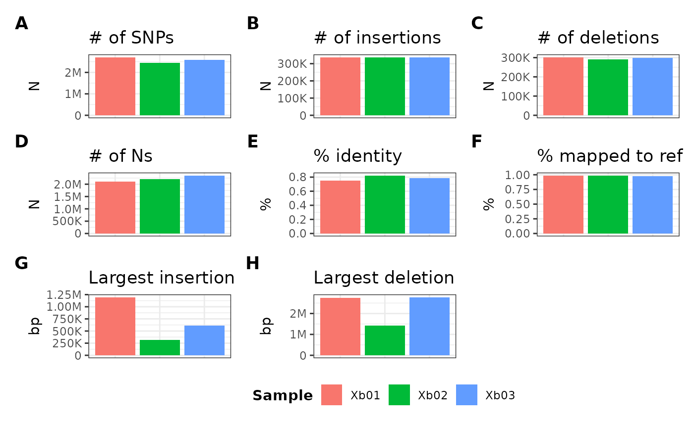
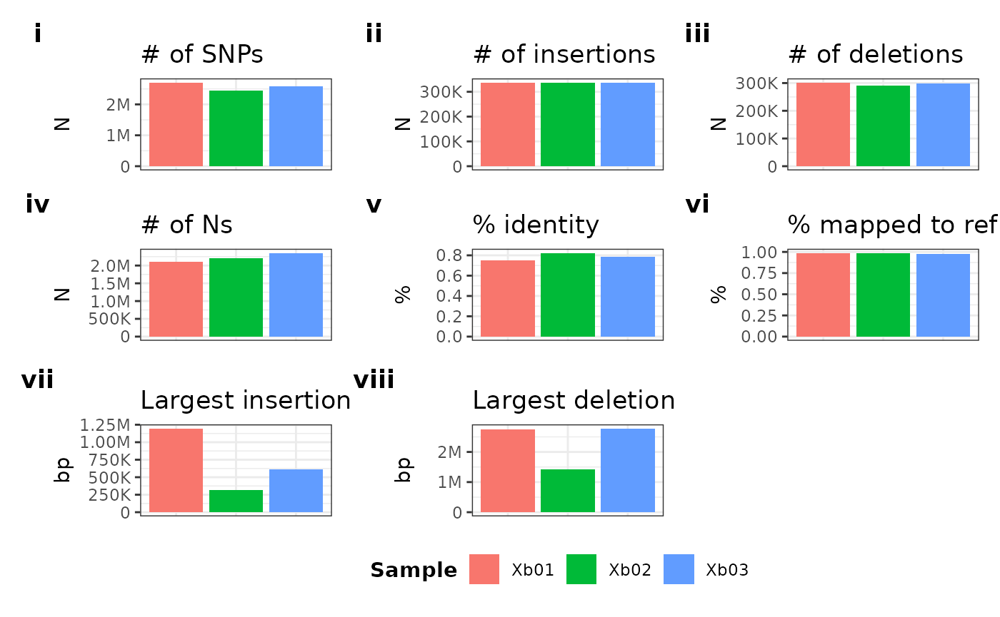

Creating PHGMetrics objects
In addition to loading and inspecting hVCF data, rPHG2
provides classes for quick loading and granular visualization of “PHG
metrics” data. Currently, there are two primary types of PHG
metrics:
- Alignment files from AnchorWave
- used for collinearity plotting of samples against the reference genome
- gVCF data metrics
- general statistics of gVCFs generated for each sample chromosome pair
To provide “easy to use” downstream plotting methods, we will need to
construct a new rPHG2 PHGMetrics object by
providing either file paths, directory paths, or a combination of the
two as a character vector. In the following example, I will
provide a path to a directory containing both alignment and gVCF data
that is found within the library:
metricDir <- system.file("extdata", package = "rPHG2")
metricDir## [1] "/home/runner/work/_temp/Library/rPHG2/extdata"From this variable, we can simply pass this to the
PHGMetrics constructor, PHGMetrics():
metData <- PHGMetrics(metricDir)## ✔ reading data for: toy_gvcf_metrics.tsv
## ✔ reading data for: toy_anchors_s01.anchorspro
metData## A PHGMetrics object containing 2 tables:
## -- AnchorWave data:
## ❯ toy_anchors_s01 (969 10)
## -- gVCF data:
## ❯ toy_gvcf_metrics (41 19)Accessing metrics data tables
General use
From the previously created metData object, we can
directly access various types of data through a series of accessor
methods.
If we want to extract all metrics tables as
data.frame-like objects, we can use the
metricsTable() function, which will return a
list object of data.frame tables:
metData |> metricsTable()## $toy_anchors_s01
## # A tibble: 969 × 10
## ref_chr reference_start reference_end query_chr query_start query_end strand
## <int> <int> <int> <int> <int> <int> <chr>
## 1 1 52892 53561 1 22637 23277 +
## 2 1 275401 278445 1 196230 199275 +
## 3 1 665653 669559 1 456629 460535 +
## 4 1 723978 724529 1 514619 515170 +
## 5 1 1031998 1033805 1 788012 789822 +
## 6 1 1497930 1503054 1 1250572 1255668 +
## 7 1 1517777 1519239 1 1270343 1271805 +
## 8 1 2466395 2468560 1 2047907 2050072 +
## 9 1 2533102 2536854 1 2093924 2097674 +
## 10 1 2638837 2639286 1 2188800 2189249 +
## # ℹ 959 more rows
## # ℹ 3 more variables: gene <chr>, block_index <int>, score <dbl>
##
## $toy_gvcf_metrics
## # A tibble: 41 × 19
## taxa chrom ref_length num_snps num_ins num_del num_ns num_bases_inserted
## <chr> <chr> <int> <int> <int> <int> <int> <int>
## 1 Xb01 ALL 473519425 2706357 336754 301867 2101168 41462213
## 2 Xb01 Vu01 42129361 154059 26280 20211 181091 2600647
## 3 Xb01 Vu02 33908088 178101 21457 18981 152494 2293028
## 4 Xb01 Vu03 65292630 273800 43347 38073 284407 2694624
## 5 Xb01 Vu04 42731077 424488 34561 31514 177567 3908337
## 6 Xb01 Vu05 48746289 183067 28355 24918 224956 4352143
## 7 Xb01 Vu06 34463471 149413 22663 20431 152644 2262451
## 8 Xb01 Vu07 40876636 164945 26583 23708 178058 1966857
## 9 Xb01 Vu08 38363498 191440 26010 24047 171568 2214889
## 10 Xb01 Vu09 43933251 191892 27914 23807 187467 3967889
## # ℹ 31 more rows
## # ℹ 11 more variables: num_bases_deleted <int>,
## # percent_identity_with_ref <dbl>, percent_mapped_to_ref <dbl>,
## # mean_insertion_size <dbl>, median_insertion_size <dbl>,
## # largest_insertion <int>, mean_deletion_size <dbl>,
## # median_deletion_size <dbl>, largest_deletion <int>,
## # ref_ranges_with_haplotype <int>, haplotypes_identical_to_ref <int>Individual table selection
If we want to extract just one table, we can provide the
name of the table into the metricsTable()
function by specifying a valid name with the name
parameter. By default, the PHGMetrics() constructor will
specify the names of each table by extracting the base name of each file
passed to the constructor. For example, if we have the following file
path:
/path/to/my/alignment_file.anchorspro
…the default name for this table will be alignment_file.
Depending on the complexity of the file ID, rPHG2 provides
a $ operator override which allows users to cycle through
valid metrics table names:
metData |> metricsTable(name = metData$toy_anchors_s01)## # A tibble: 969 × 10
## ref_chr reference_start reference_end query_chr query_start query_end strand
## <int> <int> <int> <int> <int> <int> <chr>
## 1 1 52892 53561 1 22637 23277 +
## 2 1 275401 278445 1 196230 199275 +
## 3 1 665653 669559 1 456629 460535 +
## 4 1 723978 724529 1 514619 515170 +
## 5 1 1031998 1033805 1 788012 789822 +
## 6 1 1497930 1503054 1 1250572 1255668 +
## 7 1 1517777 1519239 1 1270343 1271805 +
## 8 1 2466395 2468560 1 2047907 2050072 +
## 9 1 2533102 2536854 1 2093924 2097674 +
## 10 1 2638837 2639286 1 2188800 2189249 +
## # ℹ 959 more rows
## # ℹ 3 more variables: gene <chr>, block_index <int>, score <dbl>Table selection by metric type
We can also extract tables by type using the type
parameter in the metricsTable() function. Currently, the
two metric types that PHGv2 provides are as follows:
-
align- For AnchorWave alignment files -
gvcf- For gVCF metrics files
metData |> metricsTable(type = "gvcf")## # A tibble: 41 × 19
## taxa chrom ref_length num_snps num_ins num_del num_ns num_bases_inserted
## <chr> <chr> <int> <int> <int> <int> <int> <int>
## 1 Xb01 ALL 473519425 2706357 336754 301867 2101168 41462213
## 2 Xb01 Vu01 42129361 154059 26280 20211 181091 2600647
## 3 Xb01 Vu02 33908088 178101 21457 18981 152494 2293028
## 4 Xb01 Vu03 65292630 273800 43347 38073 284407 2694624
## 5 Xb01 Vu04 42731077 424488 34561 31514 177567 3908337
## 6 Xb01 Vu05 48746289 183067 28355 24918 224956 4352143
## 7 Xb01 Vu06 34463471 149413 22663 20431 152644 2262451
## 8 Xb01 Vu07 40876636 164945 26583 23708 178058 1966857
## 9 Xb01 Vu08 38363498 191440 26010 24047 171568 2214889
## 10 Xb01 Vu09 43933251 191892 27914 23807 187467 3967889
## # ℹ 31 more rows
## # ℹ 11 more variables: num_bases_deleted <int>,
## # percent_identity_with_ref <dbl>, percent_mapped_to_ref <dbl>,
## # mean_insertion_size <dbl>, median_insertion_size <dbl>,
## # largest_insertion <int>, mean_deletion_size <dbl>,
## # median_deletion_size <dbl>, largest_deletion <int>,
## # ref_ranges_with_haplotype <int>, haplotypes_identical_to_ref <int>Other accessor functions
In addition to extracting tables, we can also access other types of
data found in PHGMetrics objects.
Identifiers
If we want to return all IDs of every table we can use the
metricsIds() function:
metData |> metricsIds()## [1] "toy_anchors_s01" "toy_gvcf_metrics"Similar to the previous section, we can also return IDs by metric
type using the type parameter:
metData |> metricsIds(type = "align")## [1] "toy_anchors_s01"Metadata
We can also extract metadata which will provide a simple
data.frame table containing three columns:
-
file- file ID of loaded data -
type- metrics data type -
id- the “name” of the metrics table
metData |> metricsMetaData()## # A tibble: 2 × 3
## file type id
## <chr> <chr> <chr>
## 1 toy_gvcf_metrics.tsv gvcf toy_gvcf_metrics
## 2 toy_anchors_s01.anchorspro align toy_anchors_s01Updating PHGMetrics objects
To update existing PHGMetrics we can use
f()<- complements to the accessor methods from the prior
sections. Currently, we can update or add the following information:
- metrics table names/IDs (update)
- metrics tables (add)
Update metric IDs
To update pre-existing names of tables in the object, we can use the
metricsIds() function in conjunction with the assignment
(<-) operator by passing a named character
vector, where the name of the vector is the name of the old table ID and
the element is the new name:
nameMap <- c(
"old_id1" = "new_id1",
"old_id2" = "new_id2"
)If we do not wish to remember all old IDs of our tables, we can use
the prior $ operator in conjunction with
rPHG2’s defined “to” operator, %T% in a
vector:
nameMap <- c(
metData$toy_gvcf_metrics %T% "new_gvcf_id",
metData$toy_anchors_s01 %T% "new_anchor_id"
)The prior code will internally evaluate to named
character vector:
nameMap## toy_gvcf_metrics toy_anchors_s01
## "new_gvcf_id" "new_anchor_id"This can be passed to the metricsIds() function:
metricsIds(metData) <- nameMap
metData |> metricsIds()## [1] "new_anchor_id" "new_gvcf_id"Update chromosome IDs
To update pre-existing chromosome IDs found within a
PHGMetrics object, we can use the seqnames()
in conjunction with the assignment (<-) operator by
passing a data.frame object that contains two columns:
-
old_id- old chromosome IDs already present in the object -
new_id- the new name for the ID
We can also use this function to return all global chromosome IDs from the object:
# Make copy for example purposes
metNew <- metData
metNew |> seqnames()## [1] "1" "2" "3" "Vu01" "Vu02"
## [6] "Vu03" "Vu04" "Vu05" "Vu06" "Vu07"
## [11] "Vu08" "Vu09" "Vu10" "Vu11" "contig_206"
## [16] "contig_178"To update, simply pass the data.frame object with the
old and new ID maps to the seqnames() function:
keyFile <- data.frame(
old_id = c("Vu01", "Vu03"),
new_id = c("CHR_01", "CHR_03")
)
seqnames(metNew) <- keyFile
metNew |> seqnames()## [1] "1" "2" "3" "CHR_01" "Vu02"
## [6] "CHR_03" "Vu04" "Vu05" "Vu06" "Vu07"
## [11] "Vu08" "Vu09" "Vu10" "Vu11" "contig_206"
## [16] "contig_178"As you can see, all instances of "Vu01" and
"Vu03" have been globally changed to "CHR_01"
and "CHR_03".
Update tables
We can also add new tables to our existing PHGMetrics
objects using the metricsTable() function by passing a
named list object containing a combination of the valid
types:
- file paths
- directory paths
- in-memory R
data.frameobjects containing valid PHGv2 metric structures
For this example, I will add another table via a
data.frame using some internal toy data found in the
rPHG2 package:
algnPath <- system.file("extdata/toy_anchors_s01.anchorspro", package = "rPHG2")
algnDf <- read.table(algnPath, header = TRUE, sep = "\t")
head(algnDf)## refChr referenceStart referenceEnd queryChr queryStart queryEnd strand
## 1 1 52892 53561 1 22637 23277 +
## 2 1 275401 278445 1 196230 199275 +
## 3 1 665653 669559 1 456629 460535 +
## 4 1 723978 724529 1 514619 515170 +
## 5 1 1031998 1033805 1 788012 789822 +
## 6 1 1497930 1503054 1 1250572 1255668 +
## gene blockIndex score
## 1 OQU90574 40 0.83871
## 2 interanchor 40 NA
## 3 KXG37092 40 1.00000
## 4 KXG37098 40 1.00000
## 5 EER93094 40 1.00000
## 6 KXG37167 40 1.00000
metricsTable(metData) <- list("new_algn_table" = algnDf)## ✔ importing data for: new_algn_table
metData |> metricsMetaData()## # A tibble: 3 × 3
## file type id
## <chr> <chr> <chr>
## 1 toy_gvcf_metrics.tsv gvcf new_gvcf_id
## 2 toy_anchors_s01.anchorspro align new_anchor_id
## 3 new_algn_table align new_algn_tableVisualize metrics data
If you are satisfied with how the metrics data is loaded into R, we
can directly visualize granular diagnostic plots using the
plot* family of functions.
AnchorWave data
For example, if I want to generate dot plots from alignment data, I
can simply pass the PHGMetrics object to the function,
plotDot(). Currently this can only plot one table at a
time, so we must specify the alignment table that we want to
visualize:
metData |> plotDot(metData$new_anchor_id)Note: This plot can only work on alignment
(type = "align") data and will throw an error if any
gVCF-based metrics Ids are used.
If only one AnchorWave table is loaded into memory, a user can also specify a more simpler approach:
metData |> plotDot()Note: If more than one table is loaded, this
approach will still work, but will pick the first table/elemement in the
internal list object.
gVCF metrics data
We can also visualize gVCF data using the function
plotGvcf(). This method provides granular means of
visualizing various forms of metrics data found within the gVCF
metrics file.
This method takes 3 primary components:
- The
PHGMetricsobject - A metric ID
- A gVCF metric ID contig ID formula
A simple approach would be to pass the PHGMetrics object
along with the specified metrics ID:
metData |> plotGvcf(metData$new_gvcf_id)
Similar to the alignment approach, if you have just one table, you can also pass just the function, since it will dynamically pick the only table:
metData |> plotGvcf()Formula usage
For more “granular” approaches, we can specify a formula
(f) to dictate what types of metrics and chromosome IDs we
want plotted using the following logic:
<gvcf metric ids> ~ <contig ids>The following are valid metric IDs:
| Metric ID | Description |
|---|---|
ref_length |
The length of the reference sequence |
num_snps |
The number of SNP records in the gVCF file for the given chromosome |
num_ins |
The number of insertion records in the gVCF file |
num_del |
The number of deletion records in the gVCF file |
num_ns |
The number of N’s/ambiguous bases in the assembly alignment |
num_bases_inserted |
The number of bases inserted relative to the reference sequence |
num_bases_deleted |
The number of bases deleted relative to the reference sequence |
percent_identity_with_ref |
The proportion of bases relative to refLength that are the same base as the reference base |
percent_mapped_to_ref |
The proportion of bases relative to refLength that are present in a gVCF record |
mean_insertion_size |
The mean size of insertion records |
median_insertion_size |
The median size of insertion records |
largest_insertion |
The size of the largest insertion |
mean_deletion_size |
The mean size of deletion records |
median_deletion_size |
The median size of deletion records |
largest_deletion |
The size of the largest deletion |
Due to the number of metric IDs, several “collection” IDs are also valid:
| Collection ID | Description |
|---|---|
ALL |
Plots all prior metric IDs |
CORE |
Plots num_snps, num_ins,
num_del, num_ns,
percent_identity_with_ref,
percent_mapped_to_ref, largest_insertion,
largest_deletion
|
Note: Collection IDs may only be plotted one at a time or else an error will be thrown.
For example, if I want to plot:
- the length of the reference sequence (
ref_length) - the number of deletions (
num_del)
…for chromsomes:
Vu01Vu05
…I can use the following formula syntax:
metData |> plotGvcf(f = ref_length + num_del ~ Vu01 + Vu05)I can also plot the cumulative ALL category which
combines all chromosome metrics into one using the ALL
keyword on the right-hand-side of the equation:
metData |> plotGvcf(f = ref_length + num_del ~ ALL)One thing you may have noticed is that the formula parameter is not required. If no formula is used, the default equation will be:
CORE ~ ALLDimensions
We can also specify the dimensions of the plot components using two parameters:
- number of rows (
nRow) - number of columns (
nCol)
metData |> plotGvcf(f = ref_length + num_del ~ ALL, nCol = 1)Plot “tags”
We can also modify the tagging type using symbolic identifiers via
the tag parameter:
| Symbol | Sub plot tag progression |
|---|---|
"A" |
"A", "B", "C", … |
"a" |
"a", "b", "c", … |
"1" |
"1", "2", "3", … |
"I" |
"I", "II", "III", … |
"i" |
"i", "ii", "iii", … |
metData |> plotGvcf(f = CORE ~ ALL, tag = "i")